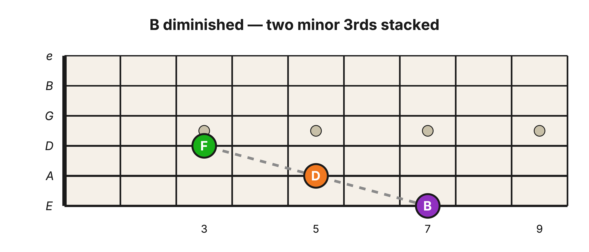

Level 2 · Chapter 10
Music Theory: The Diminished Triad
In the last chapter you built the three primary triads (C, F, and G) and played them up and down the neck. Add the three minor triads from "Chapter 7: Music Theory: The Minor Triad" (D minor, E minor, and A minor) and you have six of the key's seven chords. The seventh is still sitting where we set it aside: the chord built on B, the 7th scale degree.
We set it aside because it refuses to fit either recipe you know. It is not a Major triad and it is not a minor triad. It deserves a short chapter of its own, and this is it.
First, build it. The 1-3-5 formula works on B exactly the way it works everywhere else. B is the root. Skip C, and D is the 3rd. Skip E, and F is the 5th:
| Chord Degree ⬇ |
|
| 5 | F |
| 3 | D |
| 1 | B |
| Roman Numeral ⮕ | vii° |
Two minor 3rds
Now measure the two 3rds inside the stack, just as we did for the Major and minor triads. In fact, you have already measured both of them. Go back to the table from "Chapter 3: Harmonizing the C Major Scale in 3rds": the 3rd built on B (B-D) came out minor, and the 3rd built on D (D-F) came out minor too. Count the half steps yourself and each one is 3.
So the stack is m3 + m3. That matches neither formula. It is not the Major triad's M3 + m3, and it is not the minor triad's m3 + M3. This is a third kind of triad, built from the smaller 3rd twice.

The frame shrinks
Here is the real difference, and it shows up the moment you add the two 3rds together. A Major triad spans 4 + 3 = 7 half steps from root to 5th. A minor triad spans 3 + 4 = 7. Different stacks, same Perfect 5th frame. But two minor 3rds only span 3 + 3 = 6, and the frame comes up one half step short.
Now look at the outer notes: B up to F. You measured this exact interval in Level 1 and found the same thing, 6 half steps instead of 7. It is the diminished 5th, the one 5th in the Major scale that is not Perfect, and the reason a key holds only 6 power chords instead of 7. That interval has been waiting on the 7th scale degree since Level 1, and here it is again, as the frame of the seventh triad.
The chord is named after it. B-D-F is the B diminished triad: two minor 3rds stacked inside a diminished 5th. And now the small circle on its Roman numeral finally makes sense. Back in "Chapter 5: Music Theory: The Triad (A Bird's-Eye View)" I told you the circle in vii° marks a diminished chord, a third kind that is neither Major nor minor. This is that chord.
Here are all three recipes side by side:
| Bottom 3rd | Top 3rd | Root to 5th | |
| Major triad ➡ | Major 3rd (4) | minor 3rd (3) | Perfect 5th (7 half steps) |
| minor triad ➡ | minor 3rd (3) | Major 3rd (4) | Perfect 5th (7 half steps) |
| diminished triad ➡ | minor 3rd (3) | minor 3rd (3) | diminished 5th (6 half steps) |
The Major and minor triads are the same two intervals in a different order, which is why they share a frame. The diminished triad uses only the smaller interval, so its frame shrinks to match.
![One root and 3rd with two possible top notes on the E-A-D strings, showing how the top 3rd decides between B minor and B diminished. The root B on the low E string at the 7th fret in purple and the 3rd D on the A string at the 5th fret in orange are shared by both chords, connected by a dashed gray minor 3rd line. From D, a solid black line marks a Major 3rd up to F-sharp on the D string at the 4th fret in black, making B minor, and a dashed gray line marks a minor 3rd up to F on the D string at the 3rd fret in green, making B diminished. F-sharp sits one fret above F.](../assets/img/b-minor-b-diminished-e-a-d.png)
Hear it
The figure above is playable, so play it. Plant the bottom two notes and keep them planted: B on the low E string (7th fret) and D on the A string (5th fret). That minor 3rd belongs to both chords.
- Add F♯ on the D string (4th fret) and let all three ring: B minor. Dark, but settled.
- Now pull that top note back one fret to F (3rd fret): B diminished. The chord tightens. It sounds tense and unstable, like it is leaning hard toward somewhere else.
That restlessness is the diminished 5th at work. It is the same dissonance you played in Level 1 as the diminished 5th shape, now living inside a full chord. And notice the move your hand just made: you turned the minor triad's grip into the diminished triad by pulling the top note back one fret, exactly the way Level 1 turned the power chord shape into the diminished 5th shape.
Try it yourself
The diminished triad lives in the same place in every Major key. Level 1 showed that the 5th built on the 7th scale degree is always diminished, in every key, so the triad built there is always the diminished one. Every Major key has exactly one, and it is always the vii° chord. Spell it in the two other keys you know, using the 1-3-5 formula starting from the 7th scale degree.
- Key of G (one sharp: F♯)
- Key of D (two sharps: F♯ and C♯)
Answer key
- Key of G: the 7th scale degree is F♯, so the vii° chord is F♯-A-C (F♯ diminished)
- Key of D: the 7th scale degree is C♯, so the vii° chord is C♯-E-G (C♯ diminished)
All seven, accounted for
With the vii° chord in hand, every chord in the key of C is now built. Seven triads, three kinds of stack:
| Roman Numeral ➡ | I | ii | iii | IV | V | vi | vii° |
| Kind of triad ➡ | Major | minor | minor | Major | Major | minor | diminished |
Three Major, three minor, and one diminished. You now know how every one of them is built.